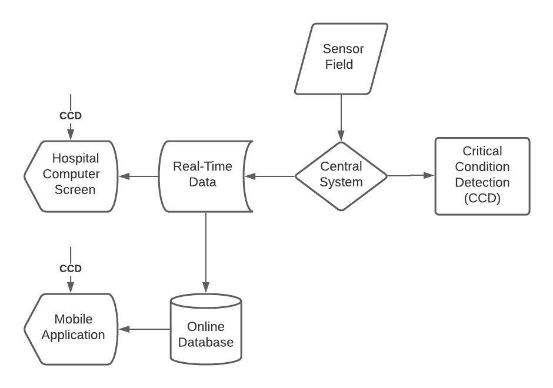

Low-Cost Microcontroller Based Mobile Integrated Remote Covid-19 Monitoring System
Abstract
Recently, especially since the start of the Covid-19 pandemic, remote control of patients has
gained importance in terms of both reducing test costs in hospitals and reducing the workload of
healthcare workers. Such systems are also capable of proposing a solution so that healthcare workers
will meet patients in person less often, will be informed faster in case of an emergency, and will have
instant access to patients’ data at all times. The smart healthcare system mentioned in this paper
measures three main vitals that are heart rate, blood oxygenation and temperature. Sensors that measure
these parameters form a wireless sensor network and this WSN is connected to a central system. The
system is controlled by Firebeetle ESP32-E development board. All patient data is transferred to a
server and the server is accessed by healthcare workers via mobile application.
I. INTRODUCTION
Growing age of technology allowed for sensors of a wide variety to be mass produced, and
consequently, allowed for smart systems to be built around almost any field of work. These systems share
a common goal of reducing human-based workload and providing ease in receiving, transferring, and
storing data.
This paper is dedicated to a smart healthcare system aiming to reduce the contact between healthcare
workers and patients as much as possible, especially in the height of Covid-19 pandemic. The system is
composed of a sensor field, mobile and desktop applications, and a central system where all collected
data is processed. Sensor field consists of two sensor nodes that are an oximeter and an infrared
thermometer, so all measurements are made non-invasively. These sensor nodes measure the patients’ blood
oxygenation, heart rate, and body temperature. Mobile and desktop applications are for tracking patient
data to facilitate diagnosis, where the data is stored on an online server for mobile application to
retrieve. The system also detects if a pattern that may lead to a potentially hazardous case is recognized
and notifies healthcare workers. The entire system is connected through Wi-Fi.

II. SENSOR FIELD
There are two sensor nodes in the sensor field, that are: an oximeter and an infrared thermometer. All
measurements are made by these two sensor nodes throughout the day periodically.
Both sensor modules were designed specifically for the project to maintain cost-effectiveness whilst
remaining efficient and reliable.
●
if you want to get this paper, contact me via this link